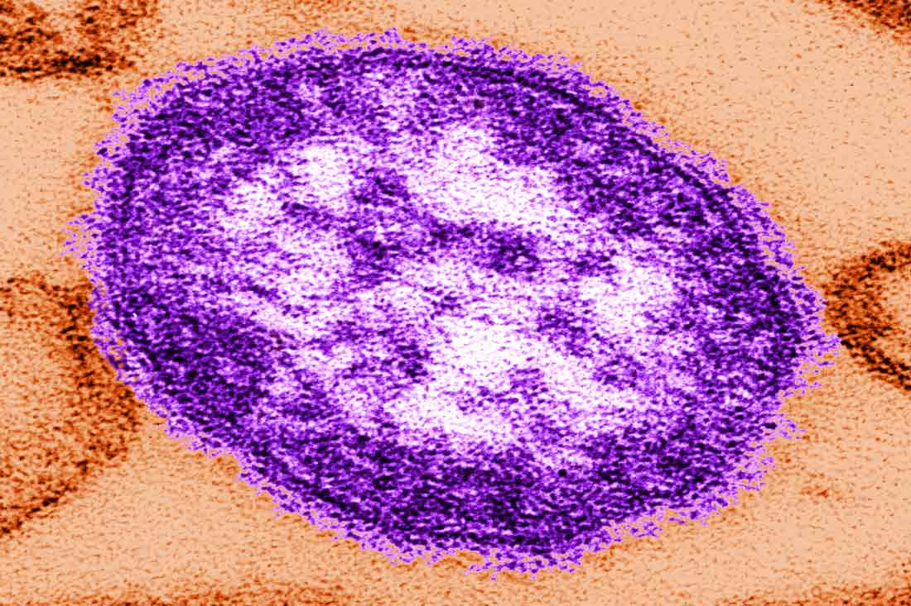

Measles

Measles is a highly contagious viral disease caused by a single-stranded RNA virus. It can be transmitted by cough droplets and direct contact with bodily fluids. Signs of measles include cough, runny nose, fever, rash, and conjunctivitis. Before the measles vaccine was introduced in 1963, there were 500 deaths annually, mostly in younger children. The measles component of the measles, mumps, rubella vaccine (MMR) has an effectiveness of 98% in 15 month old children. The MMR vaccine is given in two doses with the first dose near the child’s first birthday. The second dose is usually given when the child is between 4 and 6 years of age. Cohort studies have demonstrated that the MMR vaccine does not induce autism, discrediting false claims that vaccines can induce autism.
Adapted From:
1. Centers for Disease Control and Prevention. (2015). Measles. In Hamborsky J., Kroger A., Wolfe S., (Eds.), Epidemiology and Prevention of Vaccine-Preventable Diseases (13th ed., 209-228). Washington D.C. Public Health Foundation.
2. Taylor, L.E., Swerdfeger, A.L., and Eslick, G.D. (2014). Vaccines are not associated with autism: An evidence-based meta-analysis of case-control and cohort studies. Vaccine, 32(29), 3623-9.
Image from: http://naplesherald.com/2016/06/08/first-measles-case-since-1997-reported-in-collier/